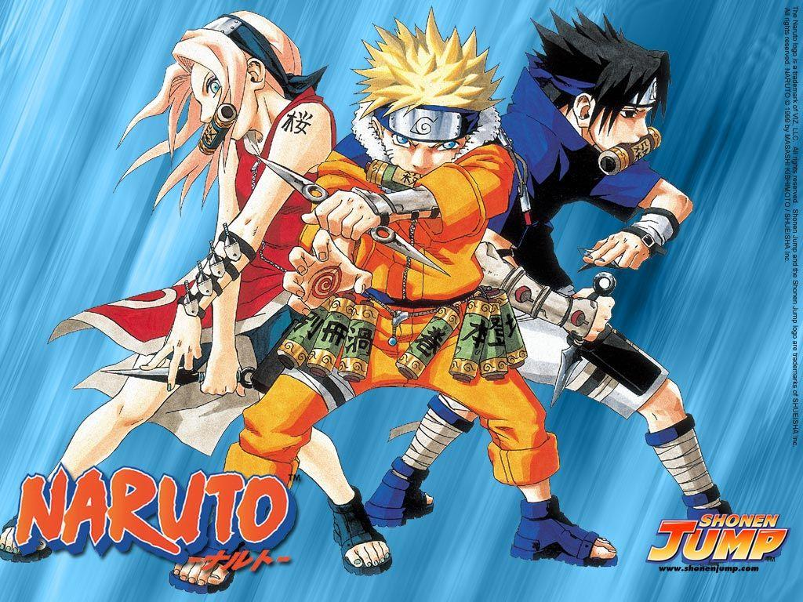
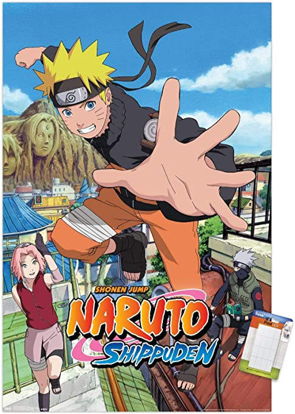

Naruto's story
Naruto in his childhood was always lonely cause his both parents were already dead in the past shinobi war. He had no one who would look for him at that time but later he became the greatest shinobi of the whole ninja world and was appreciated by everyone. He is the true symbol of unity.
Naruto series
The Naruto anime has 3 series
- Naruto Shonen Jump
Shonen Jump is the first series of naruto verse and in this whole series naruto is a kid who is begining his journey to become the Hokage of konoha village. At first Naruto is seen to be a very naughty child who is always doing mischieves but later everyone comes to realise his pain and makes many friends and at last he finds his mentor and goes for a journey to train himself under the guidence of Master Jiraya.
- Naruto Shippuden
Shippuden is the following series of Naruto Shonnen Jump. In this series Naruto finally returns from the journey of being stronger shinobi with Master Jiraya and then he restores all the villains and unites all five great shinobi nations and becomes the most powerful shinobi.
- Boruto

Boruto is the latest anime of Naruto verse. In Boruto, Naruto has become the 7th hokage and is married to lady Hinata. Naruto has two child- Boruto and Himawari. So in this whole series the leadership and the parental nature of Naruto is seen and here Boruto is given the main focus of view so here we also see the journey of Boruto and the younger generation shinobis.
Naurto anime main characters
The characters of Naruto anime is categorised as per the five great nations. Here is the list-->
- Land of Fire
- Hokages
- 1st Hokage-> Hashirama Senju
- 2nd Hokage-> Tobirama Senju
- 3rd Hokage-> Hiruzen Sarutobi
- 4th Hokage-> Minato Namikaze
- 5th Hokage-> Tsunade Senju
- 6th Hokage-> Kakashi Hatake
- 7th Hokage-> Naruto Uzumaki
- Other shinobis
- Hokages